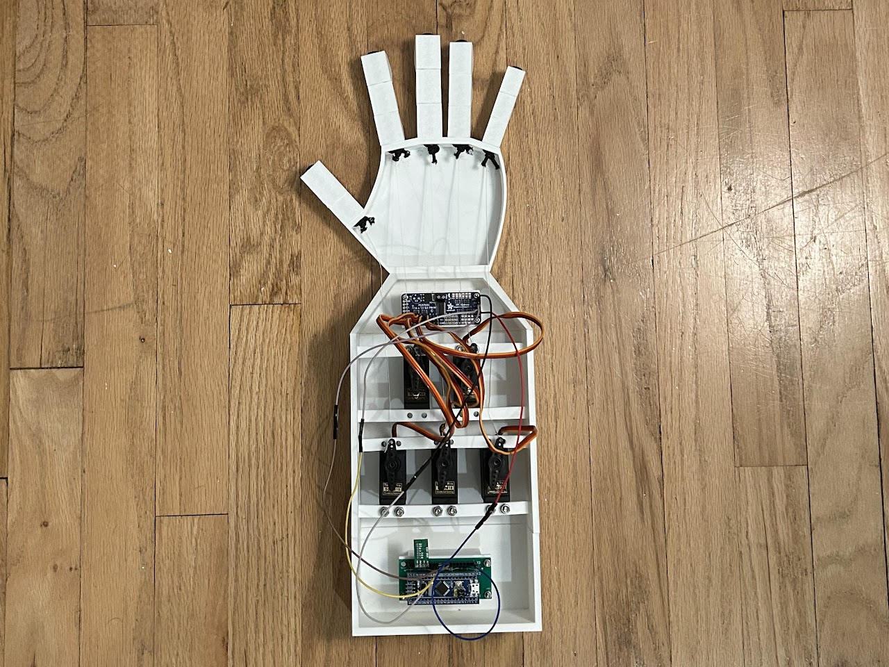
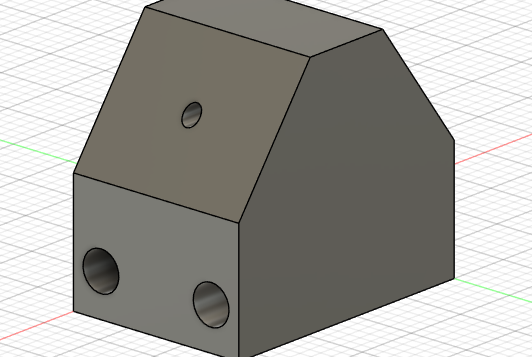
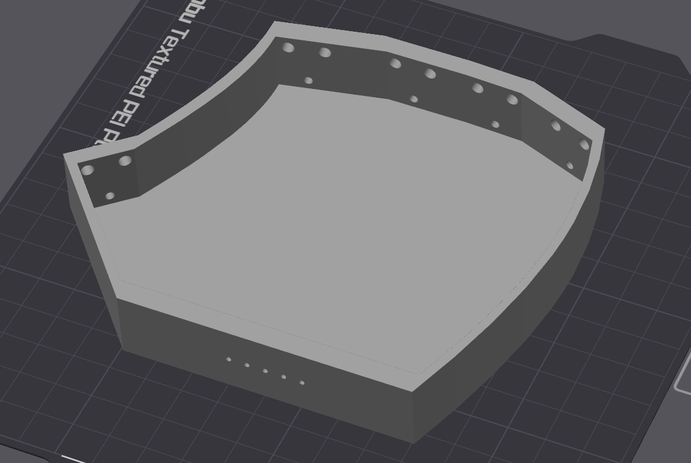
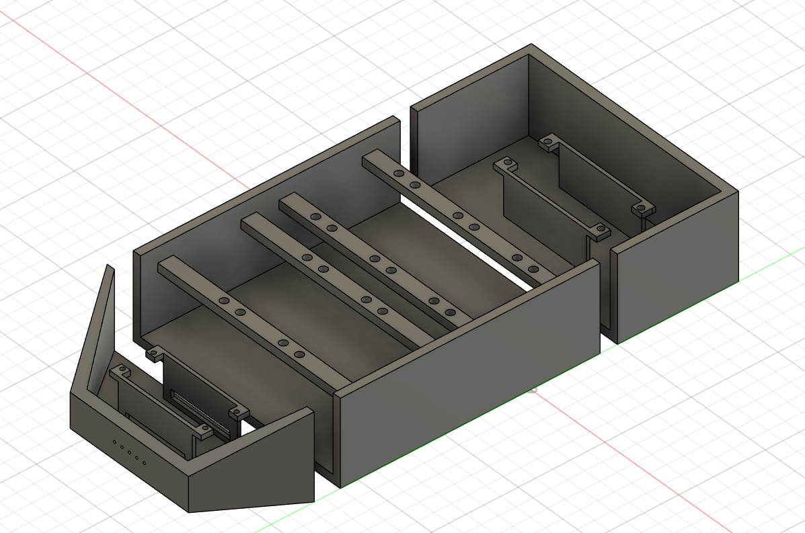
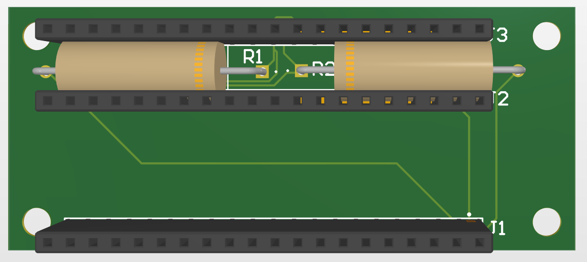

Robot Hand
Capable of accurately following users' hand gestures with Google Mediapipe's hand landmarks detection model.

Technical Skills
- Bare-metal programming using Rust and debugging a microcontroller using OpenOCD and GDB. This was the first time I programmed a microcontroller without using the built-in debugger in an IDE. I learned how to step through lines of code and check the values of variables at different checkpoints in the program which enabled me to test and verify the values of the registers.
- Implementing the I²C and UART protocols. I developed my own abstractions to handle these protocols by learning the timing of events in each protocol, the various status flags that needed to be monitored, and the individual bits that needed to be configured in each register to ensure a seamless transmission of data. One tool that was critical to verifying the data being sent with these protocols was a logic analyzer. The logic analyzer enabled me to sample communication signals (SDA and SCL for I²C, TX for UART) for a short interval and decode the bits that were being sent.
Non-Technical Skills
The most valuable skill I developed from this project is reading technical documentation like datasheets/reference manuals. I had to read at least 100 pages of information related to the STM32 and PCA9685 motor driver to understand how to communicate between the two devices using I²C. Shortly after, I had to read another 30 pages of the STM32 reference manual to learn how to implement UART.
Prior to this project, I had been able to learn information easily through accessible sources like videos or websites, but this project required me to learn how to take vast amounts of information from technical documentation and process it into something useful.
CAD Models




Parts
- STM32F103C8T6
- SG-5010 servo motors
- PCA9685 servo driver
- 7.4V LIPO battery
- Adjustable DC-DC buck converter
- 5V FTDI USB to serial cable